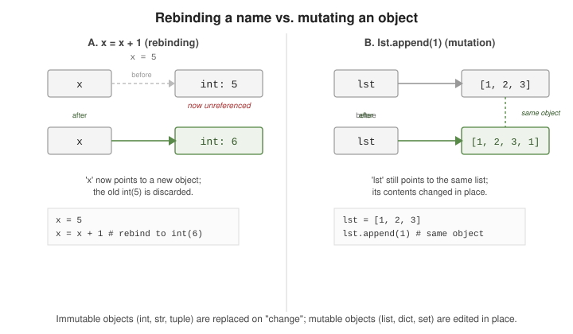

Variables and Dynamic Typing
|
This content was generated with the assistance of AI and should be verified against the official documentation before being relied on in production. |
Python variables are not typed storage slots — they are names bound to objects. The object carries the type; the name is just a label that can be re-pointed at any time.
Names, Not Slots
Assignment binds a name to an object — it never copies the object. Several names can be bound to the same object at once, and a name can be rebound to an object of a completely different type:
x = [1, 2, 3] # the name 'x' is bound to a list object
y = x # 'y' is bound to the *same* list object, not a copy
y.append(4)
print(x) # [1, 2, 3, 4] -- seen through 'x' too
x = "now a string" # 'x' rebound to a new, unrelated objectThis name-binding model is specified in the language reference’s data model chapter: every value in Python is an object, and a variable is nothing more than a reference to one.
Mutability: Rebinding vs. Mutating
Two very different things look similar at a glance:
-
Rebinding a name points it at a new object; the old object is unaffected (and is garbage-collected once nothing else references it).
-
Mutating an object changes its contents in place; every name bound to it sees the change.
x = 5
x = x + 1 # rebinding: 'x' now points to a *different* int object (6)
lst = [1, 2, 3]
lst.append(1) # mutation: the *same* list object gains an elementWhether an operation rebinds or mutates depends on the object’s type. Numbers, strings, and tuples are
immutable — every "modifying" operation on them actually produces a new object. Lists, dicts, and sets
are mutable — methods like .append(), .update(), and .add() change the object in place. The
full catalogue of built-in types and which category each falls into is in
the standard type hierarchy reference.
A preview of the mutable-default-argument pitfall
Because a default argument value is created once, at function-definition time, a mutable default is
shared across every call that doesn’t supply its own — covered in depth, with a worked example and the
None-sentinel fix, on Functions.
Shared References: is vs. ==
== asks whether two objects have equal value; is asks whether two names are bound to the same
object (identity). id() returns a number that uniquely identifies an object for its lifetime — CPython
uses its memory address, but that is an implementation detail, not something to depend on.
a = [1, 2, 3]
b = [1, 2, 3]
c = a
a == b # True -- same contents
a is b # False -- two distinct list objects
a is c # True -- 'c' is bound to the same object as 'a'
id(a) == id(c) # True, consistent with 'a is c'Python’s small-integer and (in many, but not all, situations) string caching means is can appear
to succeed for immutable values that were never explicitly shared:
m = 5
n = 5
m is n # True in CPython -- small ints (-5..256) are cached/interned
p = 1000
q = 1000
p is q # not guaranteed -- may be True or False depending on contextThis caching is an implementation detail of CPython, not a language guarantee — see
the is / is not operators in the
language reference. Never write code whose correctness depends on interning; use == to compare values
and reserve is for identity checks such as x is None.
The Built-In Type Hierarchy, at a Glance
Every object’s type falls into one of a small number of built-in categories. This map is worth keeping in mind as a table of contents for the rest of this section — Collections covers sequences, mappings, and sets in depth; Functions covers callables:
# numbers -- int, float, complex, bool (bool is a subtype of int)
# sequences -- str, bytes, list, tuple, range
# mappings -- dict
# sets -- set, frozenset
# the null type -- None (the sole instance of NoneType)
# callables -- functions, methods, classes, and any object with __call__
# classes -- every class is itself an object, an instance of 'type'
type(42) # <class 'int'>
type(3.14) # <class 'float'>
type("hi") # <class 'str'>
type([1, 2]) # <class 'list'>
type({"a": 1}) # <class 'dict'>
type(None) # <class 'NoneType'>
type(len) # <class 'builtin_function_or_method'>The full, authoritative breakdown — including numeric towers, the iterator protocol, and special methods each category implements — lives in the data model chapter and the built-in types reference.

The figure above contrasts the two behaviors from the mutability section: on the left, x = x + 1
detaches the name from the old int object and points it at a new one; on the right,
lst.append(1) keeps the name pointing at the same list object, whose contents change underneath it.
Inside CPython: Objects, References, and Lifetime
Every value in CPython is a heap-allocated object with three parts: an identity (never changes, and in CPython it is
the address that id() reports), a type (found through the object’s __class__) and a value. A name is an entry in a
namespace (a module’s or class’s dictionary, a function’s fast-local array, a closure cell) that holds a reference to
an object. Assignment copies the reference, never the object, and each object keeps a count of how many references
point at it.
Two names (a and b) share one Book, while shelf names a list whose slots in turn reference two other books.
The list is itself an object holding references, which is why a copy of a container can still share its contents.
Reference counting and the cycle collector
CPython frees most objects the moment their reference count drops to zero, which is why closing a file by letting it go
out of scope usually works, and why del name is only a statement about the name. Objects that reference each other in
a cycle never reach zero, so a second mechanism, the cyclic garbage collector in the
gc module, periodically finds unreachable cycles and frees them. Other
implementations (PyPy, for example) do not count references, so code must not depend on a destructor running at a
particular moment: use with blocks for resources (see Files and Context Managers).
A weak reference observes an object without keeping it alive, which makes the lifetime visible:
import weakref
class Book:
def __init__(self, title):
self.title = title
def __repr__(self):
return f"Book({self.title!r})"
a = Book("Dune")
b = a # a second name for the same object
print(a is b) # True: one object, two names
probe = weakref.ref(a) # a weak reference does not keep the object alive
del a # removes the name 'a', not the object
print(probe() is b) # True: 'b' still keeps it alive
del b # last strong reference is gone
print(probe()) # None: CPython freed the object immediately
shelf = [Book("Emma"), Book("Ulysses")]
for book in shelf: # the loop variable is just another name
pass
print(book is shelf[-1]) # True: 'book' outlives the loop and still names the last itemOutput:
True
True
None
TrueThe last two lines show a rule worth remembering: a for loop does not create a scope. Its target is an ordinary name
in the enclosing scope and stays bound after the loop ends.
Aliasing, shallow copies, and deep copies
Because assignment never copies, "I changed my list and somebody else’s changed too" is the most common beginner bug.
The copy module offers the two explicit alternatives: copy.copy builds a new outer container that shares the
inner objects, and copy.deepcopy recursively duplicates everything reachable (and copes with cycles through an internal
memo table). Slicing (items[:]), list(items), dict(d) and d.copy() are all shallow copies.
import copy
shelf = {"fiction": ["Dune", "Emma"], "science": ["Cosmos"]}
alias = shelf # same dict
shallow = copy.copy(shelf) # new dict, same inner lists
deep = copy.deepcopy(shelf) # new dict, new inner lists
shelf["fiction"].append("Ulysses")
shelf["poetry"] = ["Odes"]
print("alias :", alias)
print("shallow:", shallow)
print("deep :", deep)
print(shallow["fiction"] is shelf["fiction"])
print(deep["fiction"] is shelf["fiction"])Output:
alias : {'fiction': ['Dune', 'Emma', 'Ulysses'], 'science': ['Cosmos'], 'poetry': ['Odes']}
shallow: {'fiction': ['Dune', 'Emma', 'Ulysses'], 'science': ['Cosmos']}
deep : {'fiction': ['Dune', 'Emma'], 'science': ['Cosmos']}
True
FalseThe shallow copy has its own top-level dict (it did not receive the new "poetry" key) but still shares the inner
"fiction" list, so the appended title shows up in it. Prefer deep copies for configuration or test fixtures that must
be isolated, and avoid them for large object graphs, where they are slow and may copy things (file handles, locks) that
should not be copied.
Augmented assignment: rebinding or mutating?
x += y first looks for __iadd__. Mutable types such as list implement it as an in-place update that
returns self, so the name is rebound to the same object. Immutable types (int, str, tuple) have no such method,
so Python falls back to x = x + y and creates a new object. The difference is observable through aliases and leads to
a well-known puzzle with tuples that contain lists:
# += mutates a list in place but rebinds a tuple or an int
row_a = [1, 2]
row_b = row_a
row_a += [3] # list.__iadd__ extends in place and returns self
print(row_a, row_b) # [1, 2, 3] [1, 2, 3]
pair_a = (1, 2)
pair_b = pair_a
pair_a += (3,) # tuple has no __iadd__: pair_a = pair_a + (3,) builds a new tuple
print(pair_a, pair_b) # (1, 2, 3) (1, 2)
# the classic trap: a mutable item inside an immutable tuple
cell = ([1], 2)
try:
cell[0] += [9] # the list is extended, then the tuple item assignment fails
except TypeError as exc:
print("TypeError:", exc)
print(cell) # ([1, 9], 2): the in-place part already happenedOutput:
[1, 2, 3] [1, 2, 3]
(1, 2, 3) (1, 2)
TypeError: 'tuple' object does not support item assignment
([1, 9], 2)The tuple example raises and succeeds: the list inside was extended before the attempted rebinding of the tuple slot failed.
is, interning, and sentinels
Identity of equal immutable values is an implementation detail. CPython caches small integers and interns many string
literals (identifier-like strings that appear in source), but a value computed at run time is generally a fresh object, so
is must never be used to compare numbers or strings. Its legitimate uses are the singletons None, True and False,
and private sentinel objects that mark "no value was supplied" when None is itself a valid value:
import sys
# Equal values are not always the same object, and sameness is an implementation detail.
x = int("1000")
y = int("1000")
print(x == y, x is y) # True False (large ints are separate objects)
s1 = "".join(["sh", "elf"])
s2 = "shelf"
print(s1 == s2, s1 is s2) # True False (built at run time, not interned)
print(sys.intern(s1) is sys.intern(s2)) # True (explicit interning)
# 'is' is for singletons: None, True, False, sentinels
MISSING = object()
def lookup(table, key, default=MISSING):
value = table.get(key, MISSING)
if value is MISSING:
return "no entry" if default is MISSING else default
return value
print(lookup({"a": None}, "a")) # None (stored None is not 'missing')
print(lookup({}, "a")) # no entryOutput:
True False
True False
True
None
no entryPitfalls checklist
-
Comparing with
isfor equality (if x is 1000) works by accident for small values and fails for others; recent Python versions emit aSyntaxWarningforisagainst a literal. -
a = b = []binds both names to the same list; write two separate literals when you need two lists. -
Default argument values and class-level containers are evaluated once and shared: see the mutable default argument pitfall.
-
id()values may be reused after an object is freed, so storing them as keys is unsafe.
Every snippet in this section was run with CPython 3.14.8 and the output shown is the real output.
See Also
-
Collections — sequences, mappings, and sets built on top of this type hierarchy.
-
Functions — callables, and the full mutable-default-argument story previewed above.